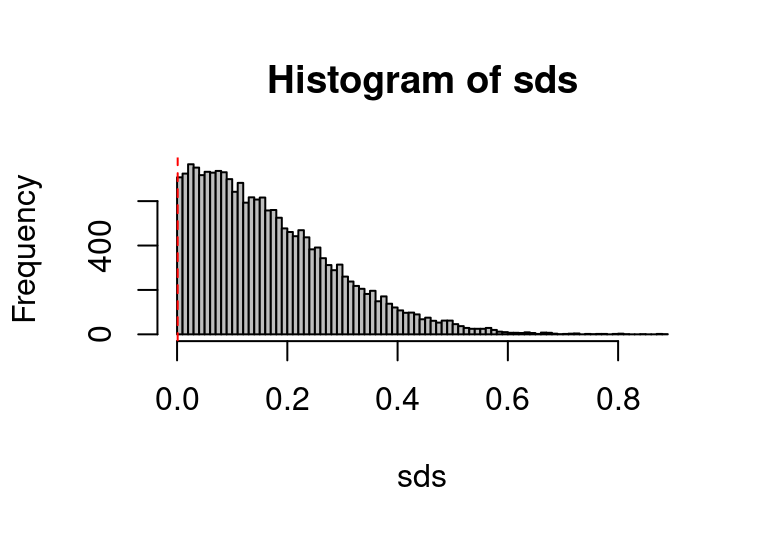

Guarantees in the long run vs. interpreting the data at hand: Two analyses of clustered data
mixed-effect models
cluster-randomised experiments
Author
Jan Vanhove
Published
January 14, 2019
An analytical procedure may have excellent long-run properties but still produce nonsensical results in individual cases. I recently encountered a real-life illustration of this, but since those data aren’t mine, I’ll use simulated data with similar characteristics for this blog post.
The data
The illustration occurred for a study with clustered data (pupils in classes) in which there were only one or two clusters per condition. In the dataset that I simulated, there are three classes that were assigned in their entirety to either the control condition (1 class) or the intervention condition (2 classes):
# Read in datad <-read.csv("http://homeweb.unifr.ch/VanhoveJ/Pub/Data/simulated_clustered_data.csv")# Pupils per class and per conditionxtabs(~ class + group_class, data = d)
group_class
class control intervention
1 17 0
2 0 13
3 0 18
Crucially, the clusters in the data need to be taken into consideration during the analysis (see Vanhove 2015). Having just one or two clusters per condition is far from ideal, but this dataset is, in principle, analysable. Let’s start by plotting the data:
Figure 1. Simulated data for a cluster-randomised experiment in which one class (= cluster) was assigned to the control condition and two were assigned to the intervention condition.
Analysis 1: A hierarchical model
One option is to analyse these data in a hierarchical (mixed-effects) model in which random effects are used to account for class-to-class variability. Based on the present dataset, this variability is in fact estimated to be non-existent: the estimated standard deviation of the distribution of class effects is essentially 0 (0.00003). This seems implausible - not least of all because I simulated data with a class effect. The estimated intervention effect, meanwhile is -0.24 with a standard error of 0.31, which means that the intervention effect is not significant in this analysis (t(1) = 0.77, p = 0.58).
library(nlme)lme_fit <-lme(outcome ~ group_class, random =~1|class, data = d)summary(lme_fit)
Linear mixed-effects model fit by REML
Data: d
AIC BIC logLik
146.2 153.5 -69.11
Random effects:
Formula: ~1 | class
(Intercept) Residual
StdDev: 3.079e-05 1.016
Fixed effects: outcome ~ group_class
Value Std.Error DF t-value p-value
(Intercept) 0.1793 0.2463 45 0.7278 0.4705
group_classintervention -0.2370 0.3065 1 -0.7734 0.5809
Correlation:
(Intr)
group_classintervention -0.804
Standardized Within-Group Residuals:
Min Q1 Med Q3 Max
-2.1958 -0.4982 -0.1049 0.5869 2.5309
Number of Observations: 48
Number of Groups: 3
This procedure is somewhat too conservative, which means that the p-values it produces tend to be too large. Alternatively, you could fit the mixed-effects model using the lmer() function from the lme4 package, but then you have to take care that your p-values aren’t too low. But in practical terms, this doesn’t matter much: with a t-value of 0.77, you’re never going to end up with a p-value anywhere close to 0.05.
Analysis 2: A t-test on the group means
If mixed-effects models aren’t your thing, you may be tempted to run an analysis that is both easy to report and perfectly accounts for the effect of clustering on inferential statistics: you’d compute the mean outcome per class and then run a t-test on the class means instead. This procedure has excellent long-run properties: it returns a significant result for the intervention effect in 5% of cases when no such effect exists. That is, it isn’t too liberal (as t-test on the individual-level data would be) nor too conservative (like the analysis with lme()). (Incidentally, an analysis on individual level data would give you pretty much the same result as the lme_fit model above for the present data – but as a procedure it’s much too liberal.)
For the present data, this means that we first compute our three class means and then run a t-test on these three means (i.e., a t-test with one degree of freedom).
# Compute summary per class (cluster):# mean outcome, standard deviation of outcome,# n data points, estimated standard error of mean outcomed_summary <- d |>group_by(class, group_class) |>summarise(mean_outcome =mean(outcome),sd_outcome =sd(outcome),n =n(),se_mean = sd_outcome /sqrt(n()),.groups ="drop")d_summary
# A tibble: 3 × 6
class group_class mean_outcome sd_outcome n se_mean
<int> <chr> <dbl> <dbl> <int> <dbl>
1 1 control 0.179 1.30 17 0.315
2 2 intervention -0.0587 0.864 13 0.240
3 3 intervention -0.0571 0.825 18 0.194
I write the t-test in the form of a linear model as the output is more informative.
# t-test on class meansttest_fit <-lm(mean_outcome ~ group_class, data = d_summary)summary(ttest_fit)
Call:
lm(formula = mean_outcome ~ group_class, data = d_summary)
Residuals:
1 2 3
7.69e-20 -7.87e-04 7.87e-04
Coefficients:
Estimate Std. Error t value Pr(>|t|)
(Intercept) 0.17926 0.00111 161 0.0040
group_classintervention -0.23717 0.00136 -174 0.0037
Residual standard error: 0.00111 on 1 degrees of freedom
Multiple R-squared: 1, Adjusted R-squared: 1
F-statistic: 3.03e+04 on 1 and 1 DF, p-value: 0.00366
The estimated intervention effect is still -0.24, but now the standard error is merely 0.001, yielding a t-value of a whopping 174. Even with one degree of freedom, this corresponds to a highly significant effect (p = 0.004). (The data were simulated without an intervention effect, so this is a Type-I error. But you wouldn’t know this.)
Which analysis is better?
So we’ve got two analyses that are both defensible but give rise to wildly different inferences. The estimate for the class-by-class variability in the lme() fit seems implausibly small, but the estimated intervention effect and its standard error wouldn’t raise any eyebrows. By contrast, the t-test on the class means seems to produce absurdly low standard errors – not to mention a ridiculous R² value of 1. Yet it is this latter procedure that has the better long-run characteristics. So which analysis is the better one?
The boring answer is that it depends on what you’re looking for in an analysis. The second analysis yields a very low p-value, but it would be incorrect to say that it is too low: If you simulate lots and lots of datasets similar in structure to the one analysed (clustered data with one and two clusters per condition, respectively) and without any intervention effect present, this procedure will only find a p-value lower than 0.05 in 5% of cases, and it’ll only find a p-value lower than 0.004 in 0.4% of cases. If you analyse those same simulated datasets using lme(), you may not find a single significant result (I didn’t in 20,000 simulations). So if the long-run behaviour of the analytical procedure is your chief concern, running a t-test on the class means is the better option.
You may, however, also be interested in estimating the intervention effect and, crucially, quantifying your uncertainty about this estimate in the form of a standard error or confidence interval. In this respect, the hierarchical model produces a more plausible result - even though for want of data, this uncertainty estimate may be highly inaccurate.
(The actual simulation-to-simulation variation was such that 90% of the estimated intervention effects lay between -0.83 and 0.83, a range of 1.65 units. The 90% confidence interval for the intervention effect in ttest_fit ranges from -0.25 to -0.23, for a range of merely 0.02 units. For lme_fit, it ranges from -2.17 to 1.70, for a range of 3.87 units. So the true accuracy lies pretty much half-way between these two estimates. But in real life, you’d only have the confidence intervals to go by, and one spanning merely 0.02 units would be considerably more suspicious than one spanning nearly 4 units. Incidentally, if you fit the same model using lme4’s lmer() function, you get a 90% confidence interval from -0.74 to 0.26, though with a couple of warnings.)
What’s causing the problem?
The ridiculously low standard errors and huge R² values in ttest_fit are consequences of the small residuals that this model produces:
resid(ttest_fit)
1 2 3
7.691e-20 -7.869e-04 7.869e-04
The first value is the residual for the class that served as the single control class. The corresponding fitted value equals the class mean, so the residual is 0 (which is what the ‘e-20’ part essentially means). The second and third value are the residuals for the classes that served as the intervention classes. Their fitted values equal the mean of both class means, and the residuals are the deviations from that mean of means. Since these class means are so similar, the deviations are small, too. Crucially, the similarity in the means of classes 2 and 3 is atypical: Based on the variability within each class, we’d expect their means to differ more than they do.
To demonstrate this, let’s first compute the standard deviation of these two class means:
sd(d_summary$mean_outcome[2:3])
[1] 0.001113
Now we take bootstrap samples within classes 2 and 3, compute their respective means, and compute the standard deviation of these means.
# Split off classes 2 and 3class2 <- d |>filter(class ==2)class3 <- d |>filter(class ==3)# Bootstrap the outcomes of class 2 and take the mean# Bootstrap the outcomes of class 3 and take the mean# Output the standard deviation of the bootstrapped meanssds <-replicate(20000, { mean_bs_class2 <-mean(sample(class2$outcome, replace =TRUE)) mean_bs_class3 <-mean(sample(class3$outcome, replace =TRUE))sd(c(mean_bs_class2, mean_bs_class3))})# Plot the standard deviations of the bootstrapped meanshist(sds, col ="grey", breaks =100)abline(v =sd(d_summary$mean_outcome[2:3]), col ="red", lty =2)

Figure 2. Bootstrapping the outcomes within each class demonstrates that the class means are more similar to each other than they ordinarily would be.
As Figure 2 shows, given the variability within each class, you would typically expect their class means to differ considerably more than they actually do. In fact, only in about 0.4% of bootstrap runs did the class means differ less than in our dataset.
mean(sds <sd(d_summary$mean_outcome[2:3]))
[1] 0.00365
The ttest_fit model doesn’t know that the class means are much more similar to each other than they normally would be, so it doesn’t account for this. (Mind you, if only the long-run behaviour of the model is of importance, it doesn’t need to know this.)
Conclusions
It isn’t unheard of that different defensible analyses of the same data lead to different inferences (see, e.g., Poarch et al., 2018, and Silberzahn et al., 2018). But I think it’s instructive to come across a case where the objectives of achieving the desired long-run behaviour and of sensibly interpreting the data that were actually observed clash.
If I had to analyse a dataset like this one in earnest, I would look into fitting a Bayesian model with reasonably informed priors in order to offset the lack of information present in the data. (A hierarchical model with brms’s default priors experiences convergence issues.) If that doesn’t work, I’d probably fit a frequentist hierarchical model (using lme or lmer()) as the results it yields are more plausible in the present case than that those of the class mean analysis.
Oh, and I’d rant to whoever collected these data that they should’ve dropped by before running the study :) I’d then have told them that it would be great if they could collect data in two or three more classes. Or that it might perhaps be possible to assign half of the pupils within each class to each condition. Still, they were extremely unlucky that the class means were so similar given the within-class variance.